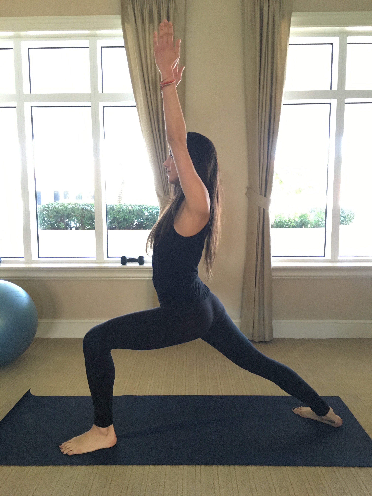
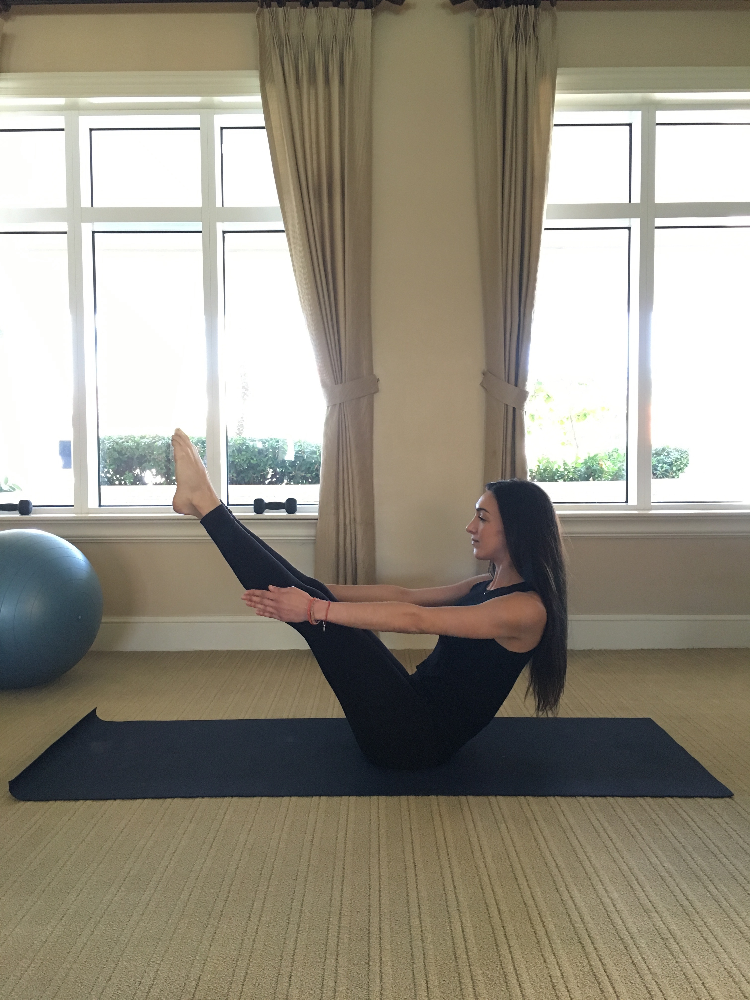

When a chakra, or wheel of energy, is stuck, it may be helpful to release the prana (energy) through movement. Yoga postures are a great way to release stale or stuck energy from the body because they invite fresh, vital energy back in through poses and the breath.
See below!
 Virabhadrasana I, or Warrior I, is a great pose for the first chakra. It connects you to the earth, giving you a strong foundation in the feet.
 Navasana, or Boat Pose, helps to stimulate the third chakra. Located at the solar plexus, this posture activates the fire of Manipura and connects us to our center.
Sirsasana, or Headstand, activates our crown chakra by placing pressure on the tops of our heads. The seventh chakra is the gateway to universal consciousness, and when stimulated we bring attention to this area and can connect to our higher self.
Top of Page